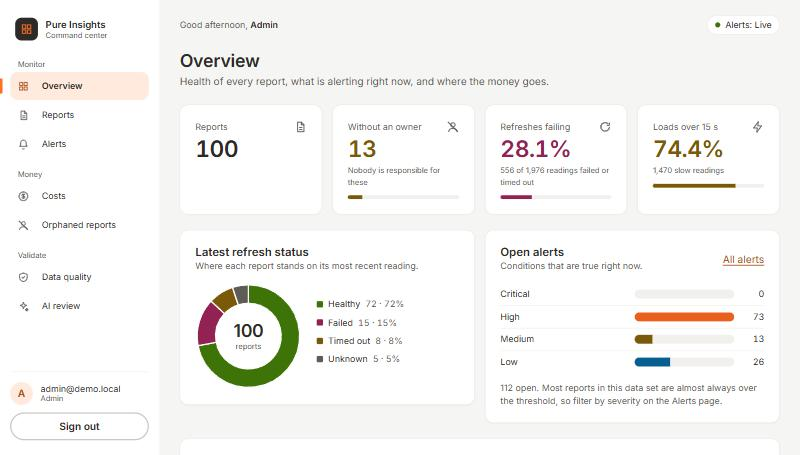
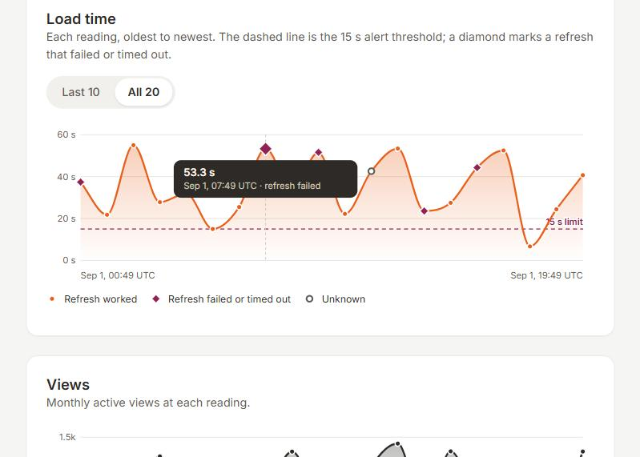

| Submitted for | Technical Data & AI Validation Intern, Monetization (Bengaluru) |
| Candidate | Shivaum Shekhar Sharma, Data Science, Manipal | sshivaum@gmail.com |
| Domain | Full-Stack Software / Platform Engineering |
| Dataset | Case_Study_3_Pure_Insights_Monitoring.csv (2,000 rows, 100 reports) |
| Stack | React 19 (Vite), Node.js 22 / Express 5, WebSocket, JWT, Snowflake SQL, Python (independent validation) |
After the move from Tableau Server to a custom portal, the business lost visibility of report usage, refresh failures, report ownership and Snowflake compute cost. I built an admin dashboard with role-based access, alerts that arrive over a WebSocket when a report loads slowly or a refresh fails, and a suite of Snowflake SQL scripts that attribute credits to individual reports and work out the cost per active view. Every headline number was also re-derived by a separate Python program that shares no code with the application, and the two were compared item by item.
| What the data and the system showed | Figure |
|---|---|
| Rows / reports / readings per report | 2,000 / 100 / 20 |
| Rows with negative Snowflake credits, set aside with a reason (not deleted) | 24 (net −161.04 credits) |
| Reports with no owner on their latest reading | 13 (242 readings have no usable owner) |
| Readings over the 15 s limit; of these, pinned at the 55 s ceiling | 1,470 of 1,976 (74.4%); 6 |
| Breaching readings turned into alerts needing attention after de-duplication | 2,026 into 838 |
| Credits attributed to the 100 reports (equal to metered credits in every warehouse-hour) | 1,206,352.48 |
| Reports whose CSV credits differ from query-based attribution by more than 10% | 64 of 100 |
| Readings whose AWS hosting cost is 3 times or more away from what their views predict | 625 (31.6%) |
| Automated tests / independent Python checks | 497 / 68, all passing |


| Role | Can do |
|---|---|
| Admin | Everything: reconciliation, quarantine ledger, orphaned reports, audit trail, reassigning owners. |
| Owner | Health, detail, cost and alerts for the reports they currently own. Anyone else's report returns 404. |
| Viewer | Fleet and report health, read-only. No cost data of any kind. |
| Anomaly | What was found | Handling |
|---|---|---|
| Orphaned reports (missing owner or ORPHANED_REPORT) | 242 readings have no usable owner (125 empty or NaN, 117 the text ORPHANED_REPORT). 13 reports have none on their latest reading. | Flagged and kept, never dropped. The last known owner is kept as a suggestion. An admin assigns an owner with an audit trail and undo. |
| Negative Snowflake credits | 24 rows, from −13.6 to −0.8 credits. | Set aside in a quarantine ledger with a reason code and excluded from cost totals. Nothing is deleted. |
| Latency spikes up to 55 s | 1,470 of 1,976 readings are over 15 s, and 6 sit at exactly 55 s. | Alerted by severity tier. 55 s is critical. Repeats are de-duplicated into 838 alerts. |
| Active users versus AWS hosting cost | 625 readings are 3x or more away from the fleet's cost per view. 4 readings have zero views but real cost. | Flagged with the expected cost and the excess. Zero-view cost is reported as idle spend. |
I also tested statistical anomaly detection on the raw file. All six numeric columns are spread evenly across their range, so neither the 1.5x IQR rule nor 3 standard deviations flags anything, and the 24 negative values sit well inside those limits. They are caught by a rule (credits cannot be negative) instead.
GitHub repository (React front end, Node.js back end, SQL scripts, tests, CI): https://github.com/shivaumsharma/pure-insights-command-center
To run it (Node 22 or newer): npm install, npm run web:install, npm run data:build, npm run web:build, npm start, then open http://localhost:3101. Demo accounts for each role are in the repository. Everything described in this document is also reproduced here, so the repository is not needed to follow it.
Complete, in Appendix A (authentication, roles, every endpoint, the alert object, WebSocket messages, reconnect rules, close codes). A test fails if this specification and the routes registered in the code ever disagree, and it calls each documented endpoint on a live server.
Complete, in Appendix B: the schema, then five scripts run in order (attribution, unit cost, reconciliation checks, per-report variance, views versus AWS cost).
The scripts are written in portable SQL. They run unchanged on a local SQLite engine, where they are tested against hand-worked fixtures and against the independent Python re-derivation, and a static check parses each one as Snowflake SQL, resolves every table and column against the schema, and confirms each CSV fits its table. A run on a live Snowflake account has not been completed yet.
Reconciliation checks on the real data:
| Check | Question | Result |
|---|---|---|
| R1 | Do attributed credits equal metered credits in every warehouse-hour? | PASS |
| R2 | Any metered credits in hours when no queries ran? | PASS (0) |
| R3 to R5 | Did any join silently drop an observation or a query row? | PASS (0 each) |
| R6 | Any negative credits left after cleaning? | PASS (0) |
| R7 | Attributed total against the CSV total | INFO: equal, but the logs were built from the CSV, so this proves nothing by itself |
| R8 | Per-report attributed credits against the CSV's claimed credits, within 10% | FAIL: 64 of 100 reports outside tolerance |
R8 fails because the supplied data was generated so that each report's credits are independent of its query workload. It shows that the reconciliation can catch a disagreement; it is not evidence that any real report is mis-billed. The largest gap is RPT_299: the CSV claims 7,795.11 credits and the query logs imply 22,391.93.
| # | Finding | Impact | Route to | Next step |
|---|---|---|---|---|
| 1 | 24 rows have negative credits. | Counting them understates usage; setting them aside nets the total up by 161.04 credits. | Snowflake usage / FinOps | Confirm whether these are credit adjustments or a feed defect. |
| 2 | 242 readings have no usable owner; 13 reports have none now. They carry about 13% of attributed spend. | Nobody is accountable for them. | Platform admin | Assign owners; stop the feed writing the placeholder. |
| 3 | All 100 reports show more than one owner across their 20 readings. | "Current owner" is ambiguous. I define it as the owner on the latest reading. | Platform admin | Choose a source of truth for ownership. |
| 4 | 74.4% of readings exceed 15 s; 6 are pinned at 55 s. | A fixed 15 s rule fires on almost everything. 55 s looks like a timeout. | Platform engineering | Confirm the threshold and what 55 s means. |
| 5 | 556 refreshes failed or timed out (28.1%); 98 readings have status UNKNOWN. | UNKNOWN is neither failure nor recovery. | BI operations | Find why the status is unknown. |
| 6 | 91 readings have more peak concurrent users than monthly views. | The two measures cannot both be right, or they cover different windows. | Analytics owner | Document each column's window. |
| 7 | 625 readings have hosting cost 3x or more away from what their views predict; 4 have cost but no views. | A prompt to investigate, not a verdict; hosting also scales with concurrency and data volume. | Cloud platform / FinOps | Agree a tolerance that fits how hosting is billed. |
| 8 | 64 of 100 reports claim credits more than 10% from what query workload implies. | In this data the two are unrelated by construction. | FinOps | Rerun on real ACCOUNT_USAGE data, where this check matters. |
| 9 | The CSV has no timestamps and its columns are uncorrelated. | Alert order rests on a synthetic timeline; rankings reflect how the data was generated. | Data engineering | Provide a reading time per row; do not draw business conclusions from rankings. |
Base URL http://localhost:3101. All API routes are under /api, return JSON and use one error shape: { "error": { "code": "FORBIDDEN", "message": "...", "details": {} } }.
| Status | code | Meaning |
|---|---|---|
| 400 | BAD_REQUEST | Invalid query parameter, body or id |
| 401 | UNAUTHENTICATED / INVALID_CREDENTIALS | No, bad, expired or forged token; wrong email or password |
| 403 | FORBIDDEN | Signed in, but the role may not do this |
| 404 | NOT_FOUND | Unknown route or report, or a report outside an owner's scope |
| 413 | PAYLOAD_TOO_LARGE | Body over 10 KB |
| 429 | TOO_MANY_ATTEMPTS | Five failed sign-ins for one email and address in 15 minutes (see Retry-After) |
| 500 | INTERNAL | Generic message only; detail is logged on the server |
POST /api/auth/login with { "email", "password" } returns { token, token_type: "Bearer", expires_in, user }. Send Authorization: Bearer <token> on every other request. Tokens are HS256 JWTs (8 hours) carrying only email and role; the algorithm is pinned on verification. A wrong password and an unknown email return the same 401. GET /api/auth/me returns the signed-in user. GET /healthz is an unauthenticated liveness check.
List endpoints take limit (1 to 200, default 50) and offset (default 0) and return { data, page: { limit, offset, total } }. Responses with dollar values add meta: { credit_price_usd, price_is_placeholder: true }.
| Method and path | Roles | Notes |
|---|---|---|
| GET /api/health | all | Fleet counts: reports by latest refresh status, orphaned, refresh success and failure rates, latency breaches over 15 s. For an owner it covers only their reports. |
| GET /api/reports | all | Filters status, orphaned, q; sort = report_id, latency, failures, breaches, cost (not for viewers); order. Admin and owner rows include cost. |
| GET /api/reports/:id | all | Summary, up to 20 recent readings (newest first), and cost for admin and owner. An owner asking for another's report gets 404. |
| GET /api/costs/reports | admin, owner | Cost per report and per view, idle spend. sort = total_cost, cost_per_view, idle_cost; orphaned. |
| GET /api/costs/reconciliation | admin | Checks R1 to R8 with a pass / fail / info summary. |
| GET /api/costs/variance | admin | Attributed against CSV-claimed credits per report; status filter. |
| GET /api/costs/aws-mismatch | admin | Readings whose AWS cost does not fit their views; type filter. |
| GET /api/costs/aws-usage | admin | Every reading's views and hosting cost with its flag, unpaged, plus the fleet cost per view and the 3x ratio. |
| GET /api/orphans | admin | Reports with no current owner, costliest first, with total orphaned spend. |
| PUT /api/reports/:id/owner | admin | Body { "email" }. Assigns an owner; recorded in the audit trail. |
| DELETE /api/reports/:id/owner | admin | Removes the assignment. |
| GET /api/quarantine | admin | Rows removed by cleaning, with reason codes; reason filter. |
| GET /api/dq-report, GET /api/audit | admin | The data-quality report; owner assignments, newest first. |
| GET /api/alerts | all | History, newest first. Filters alert_type (LATENCY, REFRESH_FAILURE), severity, lifecycle, report_id. An owner sees alerts only for reports they own at the time of the request. |
| GET /api/alerts/active | all | Conditions open now, worst first, with counts by severity. |
| GET /api/alerts/summary | admin | Readings processed, breaches, alerts per lifecycle stage, readings held back. |
| GET /api/alerts/:eventId/triage | all | Checked explanation of an open alert (generated on first request, then cached; 429 if asked too often). |
| GET /api/triage/review, POST /api/triage/:eventId/review, GET /api/triage/stats | admin | Held explanations; approve or dismiss one; how the explainers are doing. |
{ "event_id": 42, "alert_type": "LATENCY", "lifecycle": "ESCALATED", "severity": "high",
"report_id": "RPT_201", "report_name": "Analytics Dashboard 2", "observation_id": "RPT_201:004",
"observed_at": "2026-09-01T03:00:30.000Z", "suppressed_since_last": 2,
"value": 41.2, "threshold": 15, "message": "RPT_201 (Analytics Dashboard 2) load time 41.2 s is over 15 s (high)" }
Lifecycle: TRIGGERED, ESCALATED, REPEATED (after the 6-hour cooldown), RESOLVED (two clear readings). Refresh-failure alerts carry the status and consecutive_failures; RESOLVED alerts carry active_for_ms. Times are event time, not wall-clock time. Severity: over 15 s low, over 25 s medium, over 35 s high, 55 s or more critical; a failed refresh is high, three in a row critical.
ws://localhost:3101/wsA browser WebSocket cannot set headers and a token in the URL leaks into logs, so the token is sent in the first message.
client -> { "type": "auth", "token": "<jwt>", "last_event_id": 41, "stream_id": "9f3a1c2e" } // last two optional
server -> { "type": "ready", "user": {...}, "last_event_id": 57, "stream_id": "9f3a1c2e", "resumed": true }
server -> { "type": "gap", "reason": "dropped" | "restarted", "oldest_event_id": 50, "last_event_id": 57 } // only if needed
server -> { "type": "alert", "event_id": 42, "alert_type": "LATENCY", ... } // missed alerts oldest first, then live
client -> { "type": "ping" } server -> { "type": "pong", "server_time": "..." }
server -> { "type": "error", "code": "...", "message": "..." } // then the socket closes
ready. On reconnect send both: you receive exactly the alerts you missed (only those your role may see), in order, each once, then live alerts. If gap arrives, events were dropped from the bounded history (2,000 alerts): refetch GET /api/alerts and GET /api/alerts/active. Reconnect with exponential backoff and jitter. Omit last_event_id on a first connection to get live alerts only.gap with reason "restarted" and replays nothing; the client resets to the id in ready and refetches over REST./ws. A browser Origin is accepted when it matches the server's own origin or is listed in ALLOWED_ORIGINS; anything else gets 403, including look-alike hosts, other ports and a null origin. Clients that send no Origin (scripts, tests) are allowed because the token authenticates them.Run in order after USE DATABASE PURE_INSIGHTS;. Parameters (credit price 3.0 as a placeholder, variance tolerance 10, hosting ratio 3) live in a one-row table, CORE.COST_PARAMS. The schema script (not listed in full) creates the database PURE_INSIGHTS, schemas CORE and SIM_ACCOUNT_USAGE, and six tables: CORE.OBSERVATIONS_CLEAN (1,976 rows, one per usable reading), CORE.QUARANTINE_LEDGER (24), CORE.REPORTS (100), CORE.COST_PARAMS, SIM_ACCOUNT_USAGE.QUERY_HISTORY and SIM_ACCOUNT_USAGE.WAREHOUSE_METERING_HISTORY (hourly per warehouse). The last two imitate the real ACCOUNT_USAGE views, which are read-only.
-- Step 1 of 5: attribute warehouse credits to reports.
--
-- Method (the standard way to cost queries on a shared warehouse, since Snowflake bills per warehouse-hour,
-- not per query): split each warehouse-hour's credits across the queries that ran in it, in proportion to
-- their share of elapsed time. A report's credits are the sum over the hours it ran.
--
-- Grain of the output: one row per QUERY_HISTORY row (here, one report in one hour).
-- attributed_credits this report's share of the warehouse-hour credits
-- reported_credits what the source CSV claims the report consumed (used only for reconciliation)
--
-- Rules:
-- * Failed and timed-out queries still hold the warehouse, so they keep their share.
-- * Credits are conserved: attributed credits in a warehouse-hour sum to that hour's metered credits.
-- A warehouse-hour with credits but no queries attributes nothing (checked in 12_reconciliation_checks.sql).
-- * LEFT JOIN to observations so a query we cannot match to an observation still carries its credits.
--
-- Portable SQL: runs on Snowflake after "USE DATABASE PURE_INSIGHTS;" and on the local SQLite warehouse.
-- Run this script first; scripts 11-14 read the table it builds.
DROP TABLE IF EXISTS core.cost_allocation;
CREATE TABLE core.cost_allocation AS
WITH workload AS (
SELECT
q.query_id,
REPLACE(q.query_tag, 'report:', '') AS report_id,
q.warehouse_name,
q.start_time AS query_start,
q.query_count,
q.total_elapsed_time_ms AS elapsed_ms,
m.start_time AS window_start,
m.end_time AS window_end,
m.credits_used AS window_credits
FROM sim_account_usage.query_history q
JOIN sim_account_usage.warehouse_metering_history m
ON m.warehouse_name = q.warehouse_name
AND q.start_time >= m.start_time
AND q.start_time < m.end_time
),
shares AS (
SELECT
w.*,
SUM(w.elapsed_ms) OVER (PARTITION BY w.warehouse_name, w.window_start) AS window_elapsed_ms
FROM workload w
),
attributed AS (
SELECT
s.*,
CASE WHEN s.window_elapsed_ms > 0 THEN s.elapsed_ms * 1.0 / s.window_elapsed_ms ELSE 0 END AS workload_share
FROM shares s
)
SELECT
o.observation_id,
a.query_id,
a.report_id,
o.report_name,
a.warehouse_name,
a.window_start,
a.window_end,
a.query_count,
a.elapsed_ms,
a.window_elapsed_ms,
a.window_credits,
a.workload_share,
a.workload_share * a.window_credits AS attributed_credits,
o.snowflake_credits_consumed AS reported_credits,
o.monthly_active_views,
o.aws_hosting_cost_usd,
o.owner_email
FROM attributed a
LEFT JOIN core.observations_clean o
ON o.report_id = a.report_id
AND o.observed_at = a.query_start;
-- Step 2 of 5: cost per report and cost per active view.
--
-- total_cost_usd = attributed_credits x credit_price_usd + AWS hosting cost
-- cost_per_view = total_cost_usd / total active views (NULL when a report has no views at all)
--
-- Definitions worth knowing:
-- * Pooled ratio: SUM(cost) / SUM(views) across a report's observations, not the average of per-observation
-- ratios. It cannot be wrecked by one observation with a handful of views.
-- * Each observation is treated as one billing period with its own cost and its own views. The source has
-- no overlap information, so views are not de-duplicated across observations (assumption D11).
-- * idle_cost_usd is spend during observations that had zero views. It is real spend with nobody using
-- the report, so it is shown separately and not hidden inside the ratio.
-- * Credits are the ATTRIBUTED credits from step 1, not the CSV's claimed figure.
-- * credit_price_usd is a placeholder in core.cost_params; do not quote dollar totals until it is replaced.
--
-- Orphan columns come from core.reports so the dashboard can show "money spent on reports nobody owns".
SELECT
c.report_id,
MAX(c.report_name) AS report_name,
r.is_orphaned,
r.last_known_owner_email,
COUNT(*) AS observations,
SUM(c.monthly_active_views) AS total_views,
ROUND(SUM(c.attributed_credits), 4) AS attributed_credits,
ROUND(SUM(c.attributed_credits) * p.credit_price_usd, 2) AS credit_cost_usd,
ROUND(SUM(c.aws_hosting_cost_usd), 2) AS aws_cost_usd,
ROUND(SUM(c.attributed_credits) * p.credit_price_usd + SUM(c.aws_hosting_cost_usd), 2) AS total_cost_usd,
CASE WHEN SUM(c.monthly_active_views) > 0
THEN ROUND((SUM(c.attributed_credits) * p.credit_price_usd + SUM(c.aws_hosting_cost_usd))
/ SUM(c.monthly_active_views), 4)
END AS cost_per_view_usd,
CASE WHEN SUM(c.monthly_active_views) > 0
THEN ROUND(SUM(c.attributed_credits) * p.credit_price_usd / SUM(c.monthly_active_views), 4)
END AS credit_cost_per_view_usd,
SUM(CASE WHEN c.monthly_active_views = 0 THEN 1 ELSE 0 END) AS zero_view_observations,
ROUND(SUM(CASE WHEN c.monthly_active_views = 0
THEN c.attributed_credits * p.credit_price_usd + c.aws_hosting_cost_usd
ELSE 0 END), 2) AS idle_cost_usd
FROM core.cost_allocation c
CROSS JOIN core.cost_params p
LEFT JOIN core.reports r ON r.report_id = c.report_id
WHERE c.observation_id IS NOT NULL
GROUP BY c.report_id, r.is_orphaned, r.last_known_owner_email, p.credit_price_usd
ORDER BY total_cost_usd DESC, c.report_id;
-- Step 3 of 5: independent checks on the cost numbers. One row per check: PASS, FAIL or INFO.
--
-- Why this exists: the dashboard shows attributed credits. These checks re-derive and cross-check them
-- from the raw tables so a wrong number is caught here instead of in front of a stakeholder.
--
-- R1 Conservation per warehouse-hour: attributed credits equal metered credits (windows that had queries).
-- R2 Unattributed credits: metered credits in windows with no queries at all. Should be zero.
-- R3 Every clean observation received a cost allocation (no silent drops from the join).
-- R4 Every allocation matched an observation (no orphaned query rows carrying credits).
-- R5 Every query row landed in a metering window (nothing fell outside the hourly buckets).
-- R6 No negative credits survived cleaning.
-- R7 Attributed total vs the CSV's claimed total. INFO only: the warehouse totals were BUILT from the CSV,
-- so agreement here is true by construction and proves nothing.
-- R8 Per-report agreement: attributed vs CSV-claimed credits within tolerance. This is the real test, because
-- query workload is independent of the CSV credits. Expect FAIL on the synthetic data (see detail in 13).
WITH window_diff AS (
SELECT
m.warehouse_name,
m.start_time,
m.credits_used,
COALESCE(SUM(c.attributed_credits), 0) AS attributed,
COUNT(c.query_id) AS queries
FROM sim_account_usage.warehouse_metering_history m
LEFT JOIN core.cost_allocation c
ON c.warehouse_name = m.warehouse_name AND c.window_start = m.start_time
GROUP BY m.warehouse_name, m.start_time, m.credits_used
),
report_var AS (
SELECT
report_id,
SUM(attributed_credits) AS attributed,
SUM(reported_credits) AS reported
FROM core.cost_allocation
WHERE observation_id IS NOT NULL
GROUP BY report_id
),
checks AS (
SELECT 'R1' AS check_id, 'Attributed = metered credits in every warehouse-hour with queries' AS description,
0 AS expected_value,
(SELECT COUNT(*) FROM window_diff WHERE queries > 0 AND ABS(credits_used - attributed) > 0.000001) AS actual_value,
0 AS is_info,
'count of warehouse-hours that do not balance' AS note
UNION ALL
SELECT 'R2', 'Metered credits in warehouse-hours with no queries', 0,
(SELECT COALESCE(SUM(credits_used), 0) FROM window_diff WHERE queries = 0), 0,
'credits that could not be attributed to any report'
UNION ALL
SELECT 'R3', 'Clean observations without a cost allocation', 0,
(SELECT COUNT(*) FROM core.observations_clean o
WHERE o.observation_id NOT IN (SELECT observation_id FROM core.cost_allocation WHERE observation_id IS NOT NULL)), 0,
'a non-zero value means the observation-to-query join dropped rows'
UNION ALL
SELECT 'R4', 'Allocations that matched no observation', 0,
(SELECT COUNT(*) FROM core.cost_allocation WHERE observation_id IS NULL), 0,
'these carry credits but are excluded from unit cost'
UNION ALL
SELECT 'R5', 'Query rows outside every metering window', 0,
(SELECT COUNT(*) FROM sim_account_usage.query_history
WHERE query_id NOT IN (SELECT query_id FROM core.cost_allocation)), 0,
'their elapsed time earned no credits'
UNION ALL
SELECT 'R6', 'Negative credits in the clean store', 0,
(SELECT COUNT(*) FROM core.observations_clean WHERE snowflake_credits_consumed < 0), 0,
'negatives should have been quarantined in Phase 1'
UNION ALL
SELECT 'R7', 'Attributed total vs CSV-claimed total (true by construction)',
(SELECT COALESCE(SUM(snowflake_credits_consumed), 0) FROM core.observations_clean),
(SELECT COALESCE(SUM(attributed_credits), 0) FROM core.cost_allocation), 1,
'warehouse credits were built from the CSV, so this match is circular'
UNION ALL
SELECT 'R8', 'Reports whose attributed credits differ from CSV-claimed by more than the tolerance', 0,
(SELECT COUNT(*) FROM report_var v CROSS JOIN core.cost_params p
WHERE CASE WHEN v.reported > 0
THEN ABS(v.attributed - v.reported) * 100.0 / v.reported
ELSE CASE WHEN v.attributed > 0 THEN 1000000 ELSE 0 END
END > p.variance_tolerance_pct), 0,
'the real reconciliation: query workload is independent of the CSV credits column'
)
SELECT
check_id,
description,
expected_value,
actual_value,
actual_value - expected_value AS difference,
CASE
WHEN is_info = 1 THEN 'INFO'
WHEN ABS(actual_value - expected_value) <= 0.000001 THEN 'PASS'
ELSE 'FAIL'
END AS status,
note
FROM checks
ORDER BY check_id;
-- Step 4 of 5: per-report detail behind check R8. Attributed credits vs the credits the CSV claims.
--
-- variance_pct = (attributed - reported) / reported x 100, so a positive number means the dashboard's
-- source figure UNDER-states what the query logs imply, and a negative number means it over-states.
-- Reported = 0 with attributed > 0 has no meaningful percentage, so variance_pct is NULL and the status
-- is OUTSIDE_TOLERANCE.
--
-- Worst offenders first.
SELECT
v.report_id,
ROUND(v.reported, 2) AS reported_credits,
ROUND(v.attributed, 2) AS attributed_credits,
ROUND(v.attributed - v.reported, 2) AS difference,
CASE WHEN v.reported > 0 THEN ROUND((v.attributed - v.reported) * 100.0 / v.reported, 2) END AS variance_pct,
CASE
WHEN v.reported > 0 AND ABS(v.attributed - v.reported) * 100.0 / v.reported <= p.variance_tolerance_pct THEN 'WITHIN_TOLERANCE'
WHEN v.reported = 0 AND v.attributed = 0 THEN 'WITHIN_TOLERANCE'
ELSE 'OUTSIDE_TOLERANCE'
END AS status
FROM (
SELECT report_id, SUM(attributed_credits) AS attributed, SUM(reported_credits) AS reported
FROM core.cost_allocation
WHERE observation_id IS NOT NULL
GROUP BY report_id
) v
CROSS JOIN core.cost_params p
ORDER BY ABS(v.attributed - v.reported) DESC, v.report_id;
-- Step 5 of 5: AWS hosting cost that does not fit the number of active views.
--
-- The brief calls out "discrepancies between active user counts and AWS hosting compute costs".
-- Definition used here (active users are approximated by monthly_active_views):
--
-- fleet_aws_per_view = total AWS cost / total views, over observations that have views
-- expected_aws_usd = fleet_aws_per_view x this observation's views
-- cost_ratio = actual AWS cost / expected AWS cost
--
-- COST_HIGH_FOR_USAGE ratio >= aws_mismatch_ratio (paying much more than usage explains)
-- COST_LOW_FOR_USAGE ratio <= 1 / aws_mismatch_ratio (heavy usage on a suspiciously cheap host)
-- ZERO_VIEWS_WITH_COST no views at all but AWS cost > 0 (ratio undefined)
--
-- Only flagged observations are returned, largest overspend first. A flag is a prompt to investigate, not a
-- verdict: AWS compute scales with concurrency and data volume as well as views, and a single observation is noisy.
WITH fleet AS (
SELECT SUM(aws_hosting_cost_usd) * 1.0 / SUM(monthly_active_views) AS aws_per_view
FROM core.observations_clean
WHERE monthly_active_views > 0
),
scored AS (
SELECT
o.observation_id,
o.report_id,
o.observed_at,
o.monthly_active_views,
o.concurrent_user_peak,
o.aws_hosting_cost_usd,
f.aws_per_view AS fleet_aws_per_view,
f.aws_per_view * o.monthly_active_views AS expected_aws_usd,
CASE WHEN o.monthly_active_views > 0
THEN o.aws_hosting_cost_usd / (f.aws_per_view * o.monthly_active_views)
END AS cost_ratio
FROM core.observations_clean o
CROSS JOIN fleet f
),
classified AS (
SELECT
s.*,
CASE
WHEN s.monthly_active_views = 0 AND s.aws_hosting_cost_usd > 0 THEN 'ZERO_VIEWS_WITH_COST'
WHEN s.cost_ratio >= p.aws_mismatch_ratio THEN 'COST_HIGH_FOR_USAGE'
WHEN s.cost_ratio <= 1.0 / p.aws_mismatch_ratio THEN 'COST_LOW_FOR_USAGE'
END AS mismatch_type
FROM scored s
CROSS JOIN core.cost_params p
)
SELECT
observation_id,
report_id,
observed_at,
monthly_active_views,
concurrent_user_peak,
ROUND(aws_hosting_cost_usd, 2) AS aws_cost_usd,
ROUND(expected_aws_usd, 2) AS expected_aws_usd,
ROUND(aws_hosting_cost_usd - expected_aws_usd, 2) AS excess_aws_usd,
ROUND(cost_ratio, 2) AS cost_ratio,
mismatch_type
FROM classified
WHERE mismatch_type IS NOT NULL
ORDER BY excess_aws_usd DESC, observation_id;